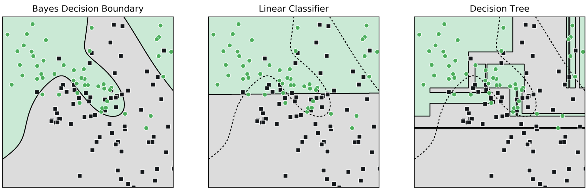

Overview
IDS 542 Applied Machine Learning
NEW COURSE FOR SPRING 2027! Open widely across Duke. Note that since this course is in development, this content is subject to change before the start of classes.
Course Summary
In almost every field, there is a need to make predictions based on data to drive decisions. The goal of this course is to provide an applied introduction to machine learning that is approachable to diverse disciplines and empowers students to become proficient in the foundational concepts and tools. You will learn to (a) structure machine learning problems and determine which algorithmic tools are appropriate, (b) evaluate the performance of your solution using field-appropriate metrics and practices, and (c) accurately interpret your model output and communicate your results to interdisciplinary audiences. This course is a fast-paced, applied introduction to machine learning that through extensive practice with foundational tools, helps you to develop your knowledge of foundational machine learning concepts, and provides practical experience with those tools to prepare you for practice or future study.
Check out the Section 5 at the bottom for an interactive demo of some of the concepts you’ll encounter in this course
Detailed Course Description
We constantly learn from examples and experiences. We’ve seen enough dark clouds in the sky to know that rain is likely coming. We’ve encountered the worst traffic when we leave at 8:30am so we leave earlier to avoid it. A radiologist has seen enough images of healthy patients to be able to diagnose correctly most of the time. This process of learning from examples or experience is known as inductive reasoning. Machine learning is algorithmically-amplified inductive reasoning.
The tools of machine learning help us to understand and make decisions based on data and past experience. This course will begin with exploring the purpose of machine learning told through a discussion of the types of problems that machine learning can answer: describing, predicting, and strategizing based on data and the tools at our disposal to address these challenges: supervised learning including classification and regression; unsupervised learning including clustering and density estimation; and reinforcement learning. There will be a strong focus on how to formulate a machine learning problem. Central to that formulation will be developing an understanding of how to preprocess data for analysis (e.g. feature extraction/dimensionality reduction, training/validation data sampling), model selection, and performance evaluation with cross validation.
Throughout this course, the focus will be on applying algorithms rather than diving deeply into theory. You will be asked to consider the practical issues of machine learning problem solving: challenges of applying machine learning code packages, striving for parsimony (simplicity of models) and interpretability, and ensuring model assumptions are valid for a given problem and dataset. This course will also stress the importance of team-based collaboration, the value of producing fully reproducible and validated results, and tools to help with both such as version control and code repositories.
Communicating your results. Data science solutions are only as impactful as the communicator who shares them: therefore communication of your findings will be a core component of this course. Demonstrating competency in data science means (a) exhibiting a working knowledge of technical concepts including programming, statistics, and mathematics and (b) being able to clearly communicate the problem you were trying to solve or question you were trying to answer, why it matters, and how well your analysis worked. You will have opportunities to practice these skills throughout this course in the context of interpreting and sharing the results of your analyses.
Learning objectives
Through this course, you will learn to…
- Use data to make predictions and better decisions
- Understand how algorithms learn, predict, and make mistakes
- Build, train, and improve machine learning models
- Create robust experimental designs for evaluating model performance and uncertainty
- Interpret model output appropriately and the degree of associated confidence
- Develop judgement to apply machine learning techniques effectively and responsibly
The tools/techniques that you will encounter include:
- Supervised learning algorithms for classification and regression including linear models, nonparametric models, ensembles, neural networks, and deep learning techniques including transformers and self-supervised approaches
- Validation techniques including held out datasets, cross validation, and bootstrapping; uncertainty estimation; various performance metrics and both Receiver Operating Characteristic and Precision Recall curves
- Unsupervised learning for clustering, density estimation, and dimensionality reduction
- …and much more!
Recommended Prerequisites
- Some experience coding (preferably Python)
- Familiarity with calculus and matrix operations
- Familiarity with basic probability and/or statistics
If you have questions about your specific situation, please reach out to the instructor.
Interactive Introduction
Machine learning can be used to predict whether or not it will rain, estimate the price of gold, diagnose a patient, determine the optimal strategy for operating a power plant, automatically identify all the buildings in a satellite image, and much more. As a mini example, consider the scenarios below showing two classes. Imagine you want to use the training points to develop a classifier to determine between these two categories automaticall (green from black dots). They are plotted based on their features (i.e., characteristics of a sample) which are the x and y values in the plot. In a classification problem like this, we often want to establish a decision boundary to determine which class a sample belongs to. Notice how the decision boundary between the classes can vary based on how the problem is modeled, (the training data, the model, etc.) leading to vastly different and potentially variable performance (as evaluated on the test data). Through this course you’ll learn how setup problems like this, identify useful representations of the data (the features or their transform) apply algorithmic tools and understand how they work, and the potential modeling pitfalls that you’re likely to encounter and how best to avoid them.

Try it yourself: each shaded region is the model's prediction. Vary the level of noise on the data, try the slider for each model's configuration and compare the training and test accuracy. You can even click the plot to add training points (selecting which class you want to add first).
Training accuracy: — · Test accuracy: —